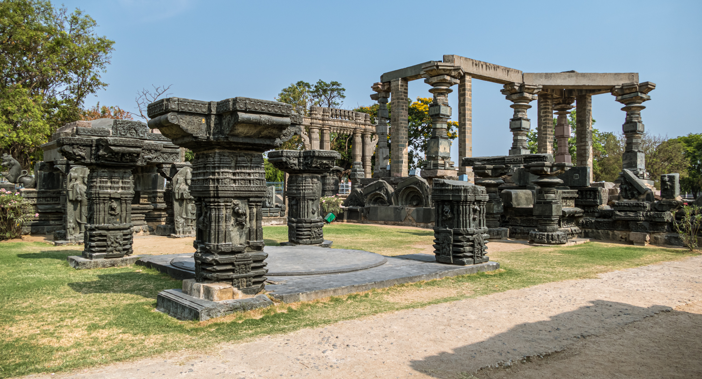
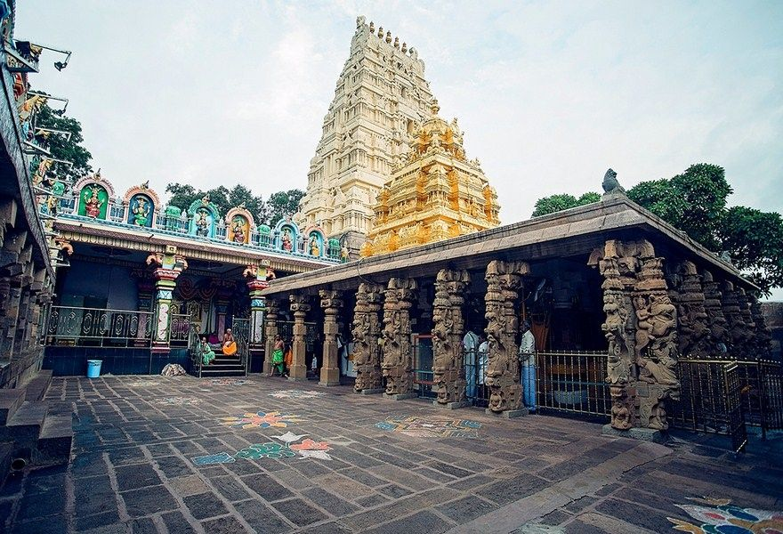
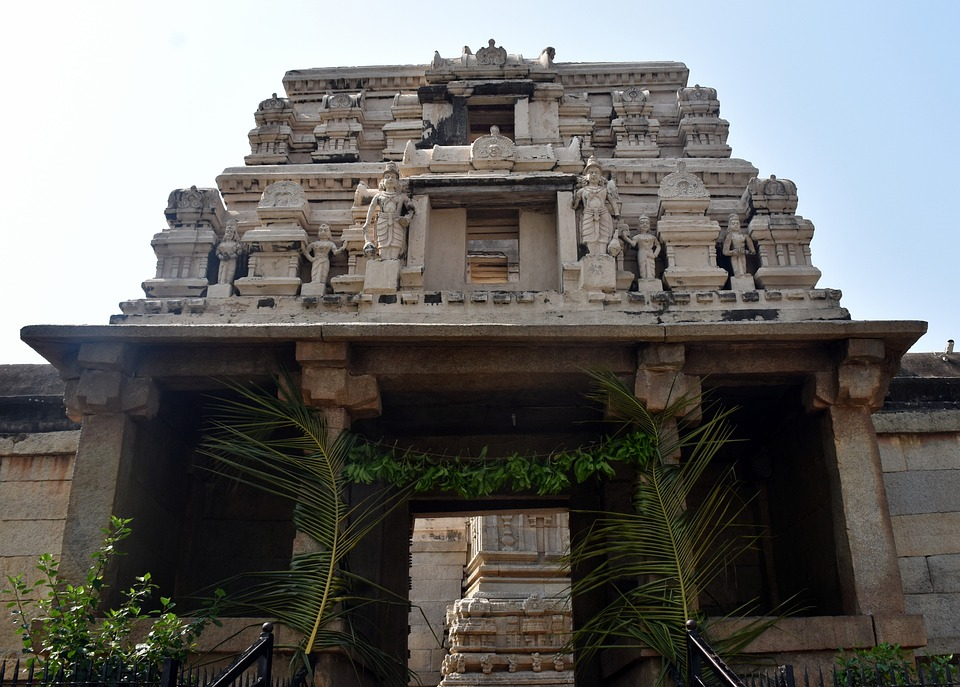
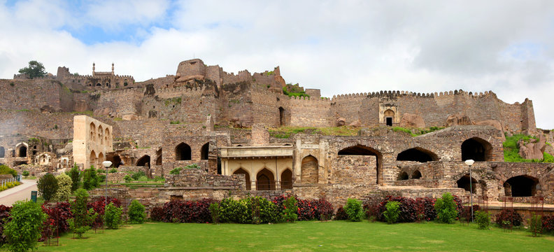
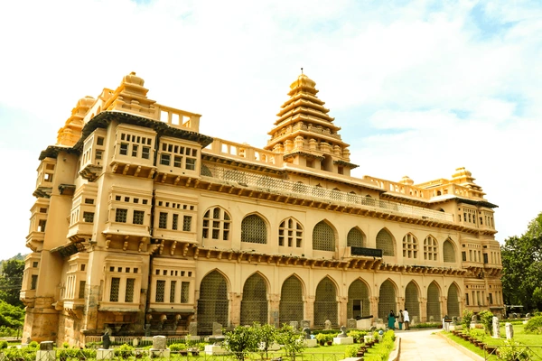

Hampi

Hampi, the former capital of the Vijayanagara Empire, is renowned for its stunning ruins and temples, reflecting the architectural brilliance of the era. Key structures include the Virupaksha Temple and Vittala Temple Complex.
Warangal Fort
Warangal Fort, built by the Kakatiya dynasty, showcases impressive gateways, the Kakatiya Kala Thoranam (arch), and various temples. It is an important site for understanding medieval South Indian architecture.
Srisailam Temple
The Srisailam Temple, dedicated to Lord Shiva and Parvati, is one of the twelve Jyotirlingas. It is located in the Nallamala Hills and features Dravidian architectural style with intricate carvings.
Lepakshi
Lepakshi is known for its richly decorated Veerabhadra Temple and its Hanging Pillar. The frescoes and sculptures in the temple depict various Hindu deities and legends from the Vijayanagara Empire era.
Golkonda Fort
Golkonda Fort, known for its advanced military architecture and acoustic design, served as the capital of the Qutb Shahi dynasty. It features impressive fortifications and the nearby Qutb Shahi Tombs.
Peddaganjam
Peddaganjam is an archaeological site with ancient Buddhist stupas and monastic cells. It provides insights into the spread of Buddhism in South India.
Chandragiri Fort
Chandragiri Fort served as a secondary capital of the Vijayanagara Empire and includes the Raja Mahal, Rani Mahal, and various temples and mosques reflecting a blend of Hindu and Islamic architecture.
Jami Masjid, Hyderabad

Jami Masjid, built during the Qutb Shahi period, is known for its traditional Islamic architectural elements, including large domes, minarets, and a spacious prayer hall.